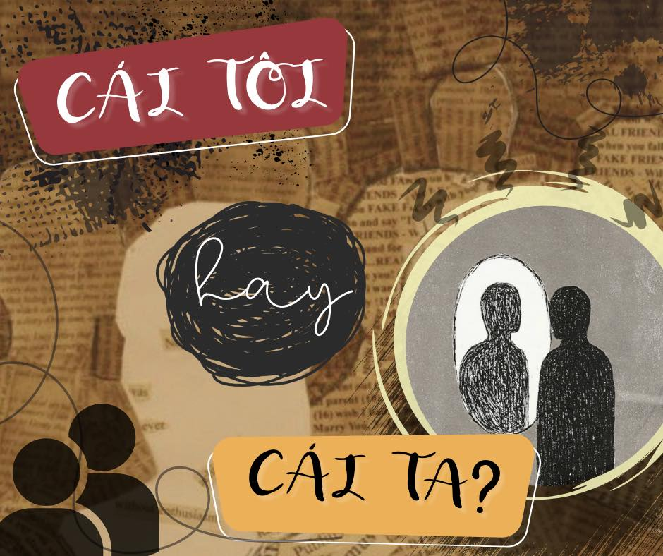
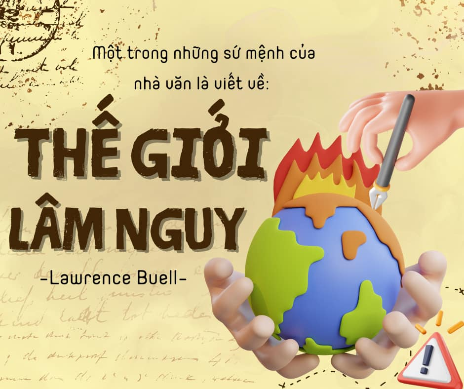
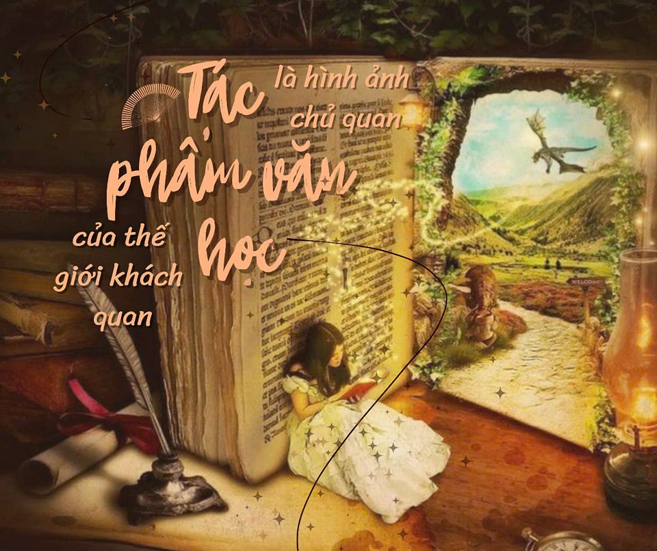
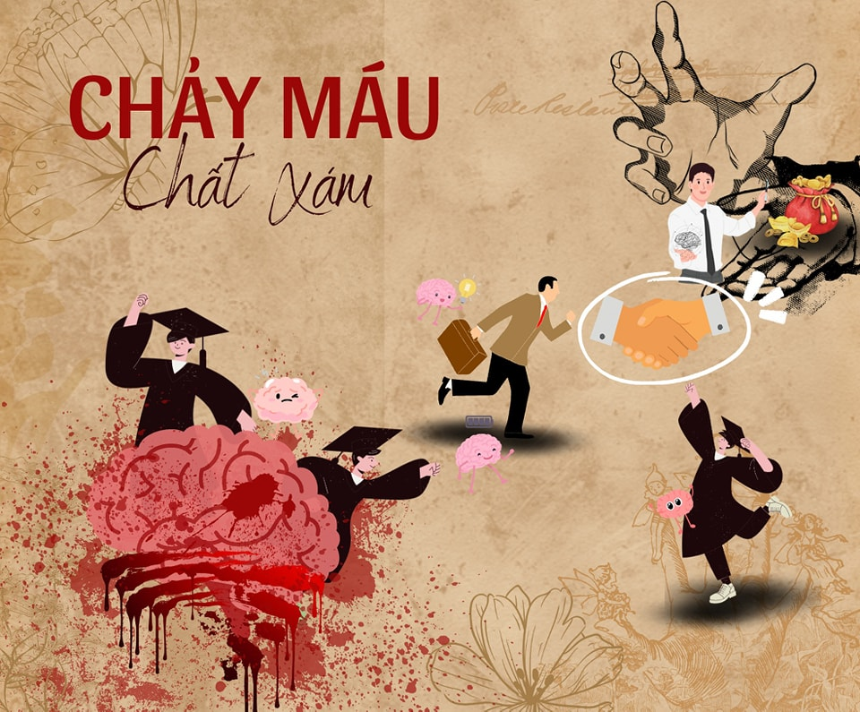
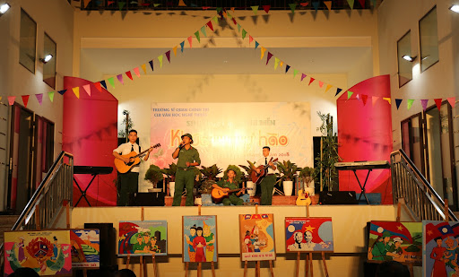
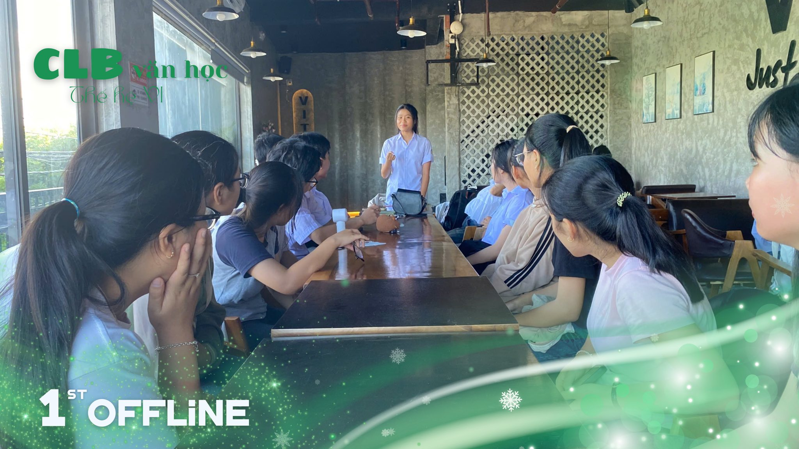

Không khí buổi sinh hoạt thường nhẹ nhàng nhưng đầy chiều sâu, như một tách trà nóng ☕.

Mỗi bài viết là một thế giới riêng, và CLB là nơi những thế giới ấy được lắng nghe 🌙.

Những buổi giao lưu ấy khiến văn học bước xuống sân khấu đời sống, gần gũi và sống động hơn 🎭.

Văn học lúc này không chỉ để đọc, mà để sống cùng 🌱.


